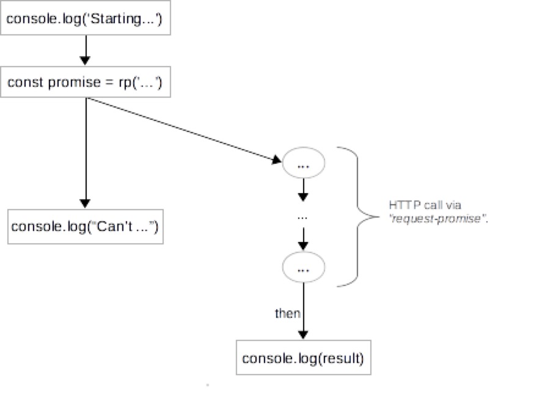
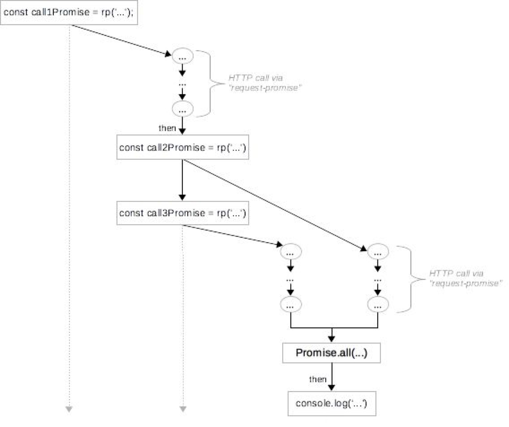
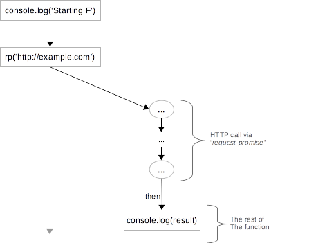
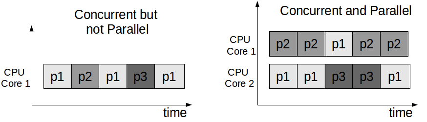

简介
JavaScript ES7 中的 async / await 让多个异步 promise 协同工作起来更容易。如果要按一定顺序从多个数据库或者 API 异步获取数据，你可能会以一堆乱七八糟的 promise 和回调函数而告终。而 async / await 结构让我们能用可读性强、易维护的代码更加简洁地实现这些逻辑。
本教程用图表和简单示例讲解了 JavaScript 中 async / await 的语法和语义。
在深入之前，我们先简单回顾一下 promise. 如果你已经对 JS 的 promise 有所了解，可放心大胆地跳过这一部分。
Promises
在 JavaScript 中，promise 代表非阻塞异步执行的抽象概念。如果你熟悉Java 的 Future、C# 的 Task, 你会发现 promise 跟它们很像。
Promise 一般用于网络和 I/O 操作，比如读取文件，或者创建 HTTP 请求。我们可以创建异步 promise，然后用 then 添加一个回调函数，当 promise 结束后会触发这个回调函数，而非阻塞住当前“线程”。回调函数本身也可以返回一个 promise 对象，所以我们能够链式调用 promise。
为了简单起见，我们假设后面所有示例都已经像这样安装并加载了 request-promise 类库：
1 | var rp = require('request-promise'); |
现在我们就可以像这样创建一个返回 promise 对象的简易 HTTP GET 请求：
1 | const promise = rp('http://example.com/') |
我们现在来看个例子：
1 | console.log('Starting Execution'); |
我们在第3行创建了一个 promise 对象，在第4行给它加了个回调函数。Promise 是异步的，所以当执行到第6行时，我们并不知道 promise 是否已完成。如果把段这代码多执行几次，可能每次都得到不同的结果。一般地说，就是 promise 创建后的代码和 promise 是同时运行的。
直到 promise 执行完，才有办法阻塞当前操作序列。这不同于 Java 的 Future.get, 它让我们能够在 Future 结束之前就阻塞当前线程。对于 JavaScript，我们没法等待 promise 执行完。在 promise 后面编排代码的唯一方法是用 then 给它添加回调函数。
下图描述了本例的计算过程：

Promise 的计算过程。正在执行的“线程”无法等待 promise 执行完成。在 promise 后面编排代码的唯一方法是用 then 给它添加回调函数。
通过 then 添加的回调函数只有当 promise 成功时才会执行。如果它失败了（比如由于网络错误），回调函数不会执行。你可以用 catch 再附加一个回调函数来处理失败的 promise:
1 | rp('http://example.com/'). |
最后，为了测试，我们可以用 Promise.resolve 和 Promise.reject 很容易地创建执行成功或失败的“傻瓜” promise:
1 | const success = Promise.resolve('Resolved'); |
想要更详细的 promise 教程，可以参考这篇文章。
问题来了——组合 promise
只用一个 promise 很容易搞定。但是，当需要针对复杂异步逻辑编程时，我们很可能最后要同时用好几个 promise 对象。写一堆 then 语句和匿名回调很容易搞得难以控制。
例如，假设我们需要编程解决如下需求：
- 创建 HTTP 请求，等待请求结束并打印出结果；
- 再创建两个并行 HTTP 请求；
- 等这两个请求结束后，打印出它们的结果。
下面这段代码示范了如何解决此问题：
1 | // 第一次调用 |
我们开头创建了第一个 HTTP 请求，并且加了个完成时候运行的回调（1-3行）。在这个回调函数里，我们为随后的 HTTP 请求创建了另外两个 promise（8-9行）。这两个 promise 同时执行，我们需要加一个能等它们都完成后才执行的回调函数。因此，我们需要用 Promise.all 将它们组合到同一个 promise 中（11 行），它们都结束后这个 promise 才算完成。这个回调返回的是 promise 对象，所以我们要再加一个 then 回调函数来打印结果（12-16行）。
下图描述了这一计算流程：

Promise 组合的计算过程。我们用 Promise.all 将两个并行的 promise 组合到一个 promise 中。
对于这个简单的例子，我们最后用了两个 then 回调方法，并且不得不用 Promise.all 来让两个并行的 promise 同时执行。如果我们必须执行更多异步操作，或者加上错误处理会怎么样呢？这种方法最后很容易产生一堆乱七八糟的 then, Promise.all 和回调函数。
Async 方法
Async 是定义返回 promise 对象函数的快捷方法。
例如，下面这两种定义是等价的：
1 | function f() { |
类似地，抛出异常的 async 方法等价于返回拒绝 promise 的方法：
1 | function f() { |
Await
我们创建了 promise 但不能同步等待它执行完成。我们只能通过 then 传一个回调函数。不允许等待 promise 是为了鼓励开发非阻塞代码。否则，开发者们总会忍不住执行阻塞操作，因为那比使用 promise 和回调更简单。
然而，为了让 promise 能同步执行，我们需要让他们等待彼此完成。换句话说，如果一个操作是异步的（即封装在 promise 中），它应该能够等待另一个异步操作执行完。但是 JavaScript 解释器怎么能知道一个操作是否在 promise 中运行呢？
答案就在 async 这个关键词中。每个 async 方法都返回一个 promise 对象。因此，JavaScript 解释器就明白所有 async 方法中的操作都被封装在 promise 里异步执行。所以解释器能够允许它们等待其他 promise 执行完。
下面引入 await 关键词。它只能被用在 async 方法中，让我们能同步等待 promise 执行完。如果在 async 函数外使用 promise, 我们仍然需要用 then 回调函数：
1 | async function f(){ |
现在我们来看如何解决上一节的问题：
1 | // 将解决方法封装到 async 函数中 |
上面这段代码中，我们把解决方法封装到 async 函数中。这让我们能直接对里面的 promise 使用 await 关键字，所以不再需要使用 then 回调函数。最后，调用这个 async 函数，它简单地创建了一个 promise 对象, 这个 promise 封装了调用其他 promise 的逻辑。
当然，在第一个例子（没有用 async / await）中，两个 promise会被同时触发。这段代码也一样（7-8 行）。注意，直到第 11-12 行我们才使用 await, 将程序一直阻塞到两个 promise 执行完成。然后我们就能断定上例中两个 promise 都成功执行了（和使用 Promise.all(…).then(…) 类似）。
这背后的计算过程跟上一节给出的基本相当。但是代码可读性更强、更易于理解。
实际上，async / await 在底层转换成了 promise 和 then 回调函数。也就是说，这是使用 promise 的语法糖。每次我们使用 await, 解释器都创建一个 promise 对象，然后把剩下的 async 函数中的操作放到 then 回调函数中。
我们再看看下面的例子：
1 | async function f() { |
下面给出了函数 f 底层运算过程。由于 f 是 async 的，所以它会跟它的调用方同时执行：

函数 f 开始运行并创建了一个 promise 对象。就在那一刻，函数中剩下的部分被封装到一个回调函数中，并在 promise 结束后执行。
错误处理
前面大部分例子中，我们都假设 promise 执行成功。因此在 promise 上使用 await 会返回值。如果我们进行 await 的 promise 失败了，async 函数就会发生异常。我们可以用标准的 try / catch 来处理这种情况：
1 | async function f() { |
Async 函数不会处理异常，不管异常是由拒绝的 promise 还是其他 bug 引起的，它都会返回一个拒绝 promise:
1 | async function f() { |
结论
Async / await 是让 promise 更完美的语言结构。它让我们能用更少的代码使用 promise. 然而，async / await 并没有取代普通 promise. 例如，如果在普通函数中或者全局范围内调用 async 函数，我们就没办法使用 await 而要依赖于普通 promise:
1 | async function fAsync() { |
我通常会将大部分异步逻辑封装到一个或者几个 async 函数中，然后在非异步代码中调用。这让我尽可能少地写 try / catch 回调。
Async / await 结构是让使用 promise 更简练的语法糖。每一个 async / await 结构都可以写成普通 promise. 归根结底，这是一个编码风格和简洁的问题。
关于说明并发和并行有区别的资料，可以查看 Rob Pike 关于这个问题的讨论，或者我这篇文章。并发是指将独立进程（通常意义上的进程）组合在一起工作，而并行是指真正同时处理多个任务。并发关乎应用设计和架构，而并行关乎实实在在的执行。
我们拿一个多线程应用来举例。应用程序分离成线程明确了它的并发模型。这些线程在可用内核上的映射定义了其级别或并行性。并发系统可以在单个处理器上高效运行，在这种情况下，它并不是并行的。

并发VS并行
从这个意义上说，promise 让我们能够将程序分解成并发模块，这些模块可能会也可能不会并行执行。Javascript 实际否并行执行取决于具体实现方法。例如，Node JS 是单线程的，如果 promise 是计算密集型（CPU bound）那就不会有并行处理。但是，如果你用 Nashorn 之类的东西把代码编译成 java 字节码，理论上可能能够将计算密集型的 promise 映射到不同 CPU 核上，从而达到并行效果。所以我认为，promise（不管是普通的还是用了 async / await 的）组成了 JavaScript 应用的并发模块。